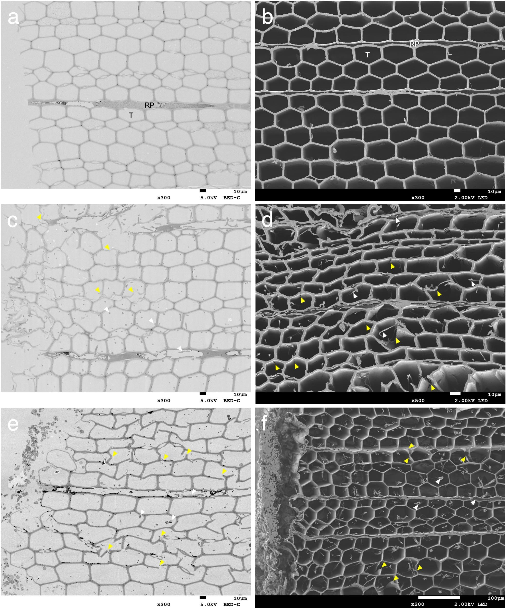
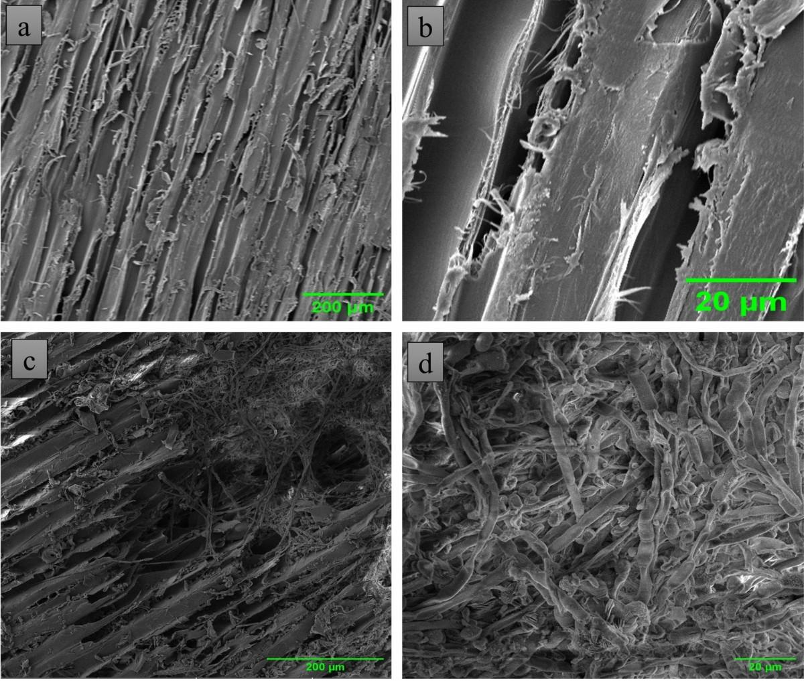
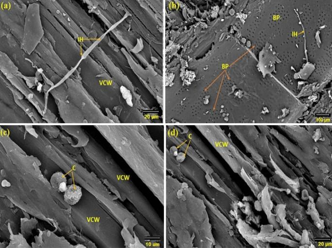
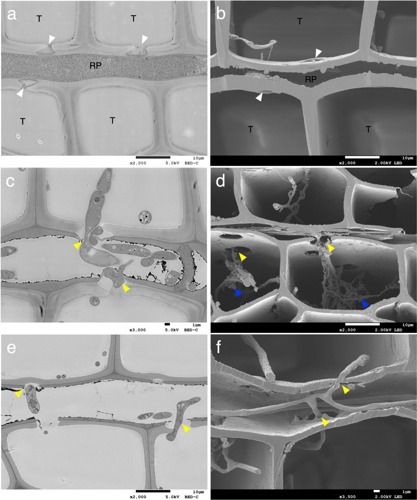

This page presents a hypothetical synthetic biology and material-science design for portfolio and educational purposes. Project Metallophyte-Armor has not been physically engineered, tested, or validated by me. The figures are reference visuals or conceptual placeholders and should not be interpreted as experimental data produced by this project.
Metallophyte-Armor proposes a pine-based material system that captures copper from controlled soil environments, buffers it during vascular transport, excludes it from needles where possible, and immobilizes it mainly inside developing wood cell walls.
Timber architecture is increasingly important for low-carbon construction, but biological degradation, insect boring, and fungal colonization remain major limitations for long-term outdoor use. Conventional copper-based wood preservatives can protect lumber after harvest, but they require industrial treatment and raise concerns about leaching, worker exposure, disposal, and accidental burning. Project Metallophyte-Armor proposes a speculative alternative: a living Pinus matrix engineered to sequester copper ions during growth through a synthetic biomineralization peptide expressed primarily in vascular xylem and cambial wood-forming tissues.
The proposed peptide would act as a high-affinity ligand for Cu2+ translocated from the rhizosphere, guiding copper retention into developing secondary cell walls rather than allowing broad distribution into needles or sensitive photosynthetic tissues. The intended outcome is a biologically mineralized timber precursor with improved resistance to fungal colonization, reduced suitability for xylophagous invertebrates, and possible local increases in density and compressive performance. The project is not presented as a solved organism, but as a risk-aware research architecture built around copper transport control, foliar exclusion, moderated mineral loading, lifecycle containment, and staged testing.

The first design module introduces a synthetic gene encoding an artificial copper-binding biomineralization peptide into vascular and cambial tissue lineages of a Pinus model. Because free copper can damage living cells, the design includes a transport-buffering layer before mineral deposition occurs. Cu2+ would be temporarily stabilized through phytochelatin-like ligands, metallothionein-like binding, and vacuolar sequestration in non-target tissues. The engineered peptide would then enrich copper capture in developing xylem walls, reducing exposure in needles, chloroplast-rich tissues, and actively dividing regions.

Once captured in wood-forming tissues, copper is proposed to become immobilized as copper-rich coordination complexes or micro-crystalline deposits within the cellulose, hemicellulose, and lignin framework of the secondary cell wall. This does not imply bulk metallic copper formation. The goal is controlled chemical fixation at low to moderate loading levels, producing a protective mineral phase without saturating the entire organism. Mineral deposition would be limited by promoter specificity, copper availability, binding-site density, and toxicity thresholds.

Copper compounds are widely associated with wood preservation because they can inhibit decay organisms under controlled treatment conditions. This proposal extends that principle into a living-growth model by asking whether copper-enriched xylem could create a chemically unfavorable microenvironment for fungal hyphae and wood-boring invertebrates. The effect is framed as dose-dependent deterrence, not instant toxic shock or complete sterilization. A realistic study would compare fungal growth, insect feeding, leaching behavior, and copper distribution against untreated pine and conventional copper-treated lumber.

The mechanical objective is to test whether mineral deposition inside the wood cell-wall architecture could improve local compressive yield, indentation resistance, and dimensional stability without making the material brittle or difficult to process. Pine wood strength depends on tracheid orientation, cell-wall thickness, density, moisture content, and microfibril angle. Metallophyte-Armor proposes moderated mineral deposition as a densifying phase within this hierarchy. The design therefore sets an upper loading threshold to avoid excessive brittleness, high tool wear, electrical conductivity, and end-of-life toxicity.
Engineering controls proposed to reduce ecological, physiological, and architectural failure modes:
Development pathway for validating the concept before any architectural use: